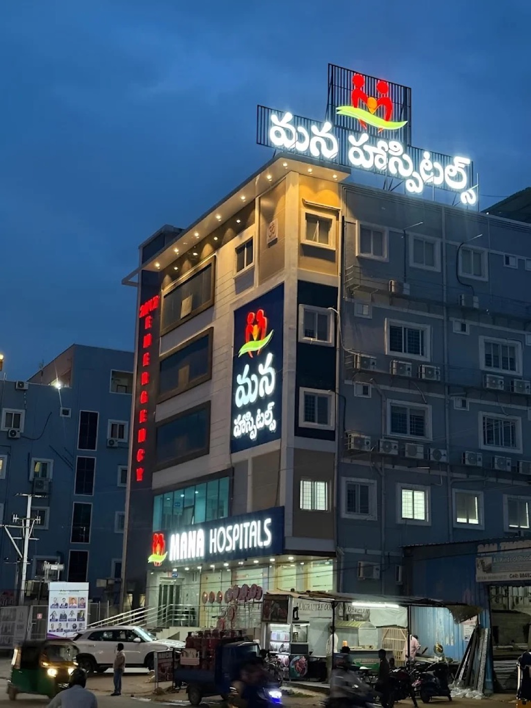

A unit of Wecare Lifeline Healthcare Pvt. Ltd., bringing experienced specialists, modern diagnostics and 24×7 emergency support to north-west Hyderabad.

For years, families in Gajularamaram travelled across Hyderabad for surgery, intensive care or a second opinion. Mana Hospitals exists to end that journey — consultant-led multispeciality treatment, delivered in the neighbourhood, at the standard you would expect from a large city hospital.
To provide safe, ethical and affordable healthcare that is patient-first, protocol-driven and outcomes-focused.
To be the most trusted neighbourhood hospital in Gajularamaram and the areas around it.
General medicine, orthopaedics, gastroenterology, cardiology, neurology, nephrology, obstetrics, paediatrics, pulmonology, dermatology, ENT, urology, radiology and ICU.
On-site lab, pharmacy, X-ray and imaging, and ICU streamline diagnosis and treatment with minimal delays — and no being sent elsewhere mid-treatment.
Written plans for diagnosis, options, costs and follow-up. You should always know what is happening, why, and what it will cost.
We listen first and involve you in the decision. You should leave understanding your condition, not just holding a prescription.
Where medication, physiotherapy or a keyhole procedure will do, that is what we recommend. Surgery is a considered decision, not a default.
Complex problems rarely sit in one department. Our consultants review together, so kidney, heart and diabetes care are planned as one.
Discharge is not the end of treatment. Follow-up and physiotherapy pathways are set before you leave.
Based in Gajularamaram and serving the communities around it — Kukatpally, Nizampet and Miyapur — with parking on site and step-free access.
Our OPD runs seven days a week and emergency care never closes. Call the hospital or request a callback and we will find you the right consultant.